What kind of day is it?
Le Jour means the day. Pick yours, we have the watch.
Your day
Track day
The helmet is on the passenger seat and the pit lane is still cold.

Your day
Sea day
The ladder is cold, and the water is colder.

Your day
City day
The lift is full, and the watch slides under your cuff.

Your day
Night out
The table is booked for nine. Malachite under candlelight.
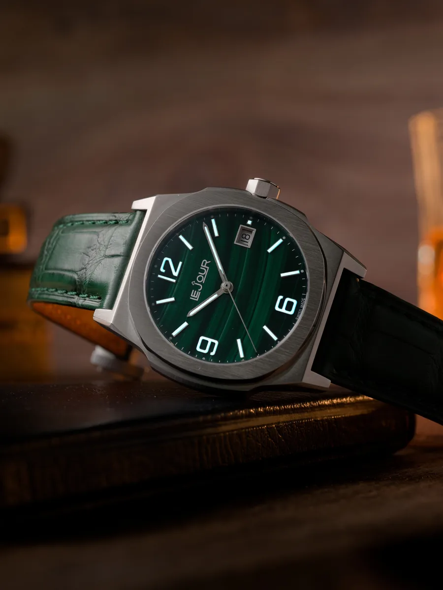
53 dials. Pick yours.
 Corsa Master Chronograph 42
Corsa Master Chronograph 42Panda
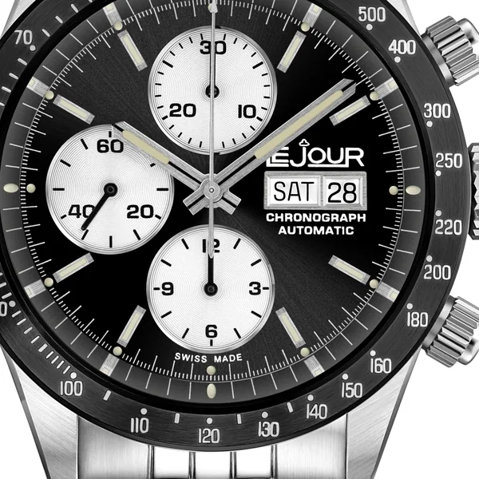
Corsa Master Chronograph 42Reverse Panda
 Corsa Master Chronograph 42
Corsa Master Chronograph 42Sky and Tobacco
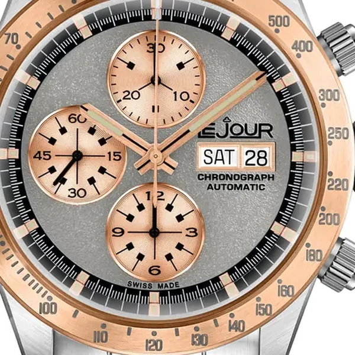
Corsa Master Chronograph 42Grey Rosé
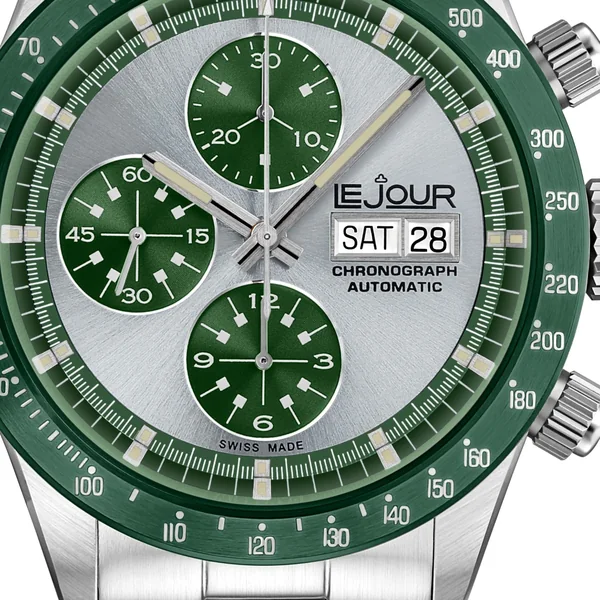
Corsa Master Chronograph 42Racing GreenCorsa Master Chronograph 42
Noir Rosé
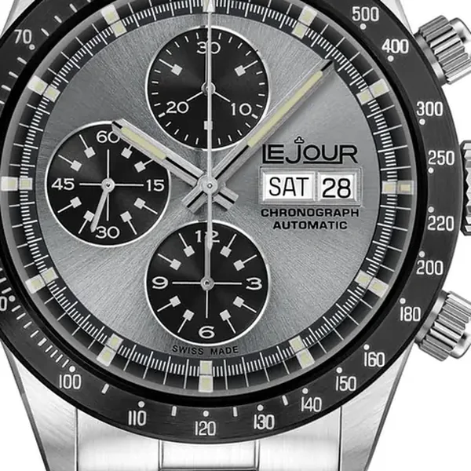
Corsa Master Chronograph 42Grey Panda
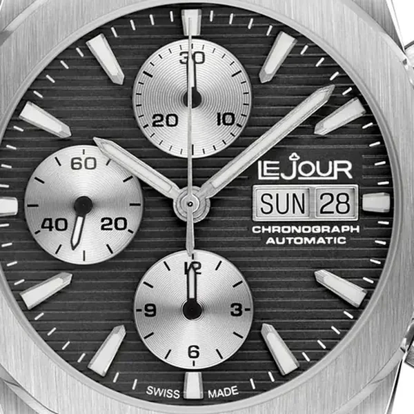
RMC Chronograph 40Black
 RMC Chronograph 40
RMC Chronograph 40Panda
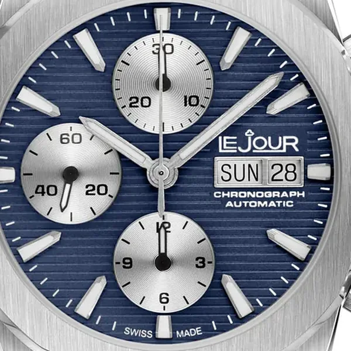
RMC Chronograph 40Blue
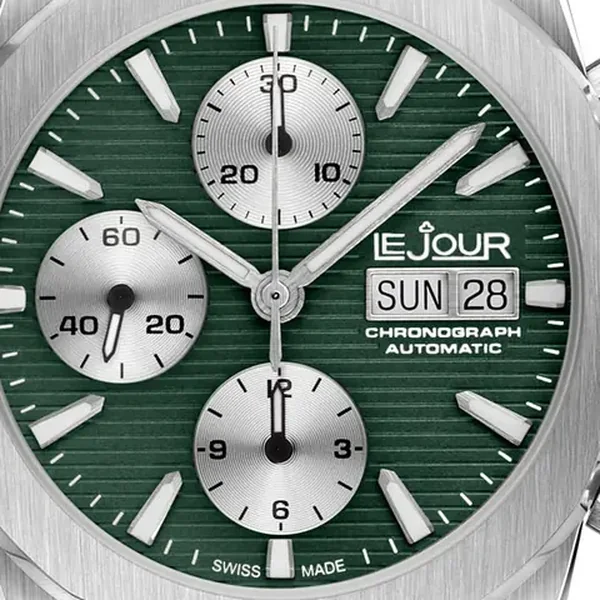
RMC Chronograph 40Green
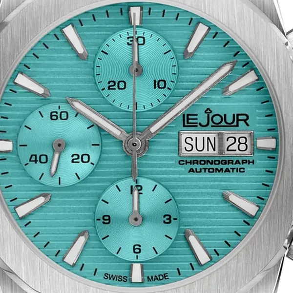
RMC Chronograph 40Light Blue
 RMC Chronograph 40
RMC Chronograph 40Rosso
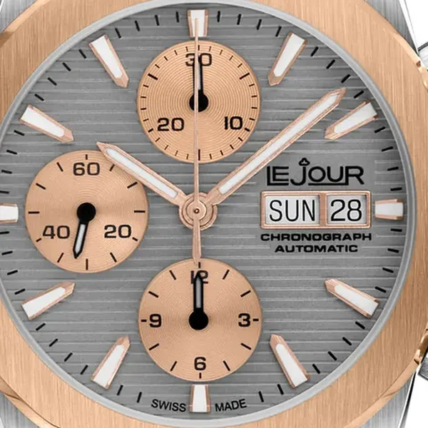
RMC Chronograph 40Grey Rosé
 Roadster Chronograph 42
Roadster Chronograph 42All Black
 Roadster Chronograph 42
Roadster Chronograph 42Reverse PandaRoadster Chronograph 42
Ice Blue
 Roadster Chronograph 42
Roadster Chronograph 42Panda
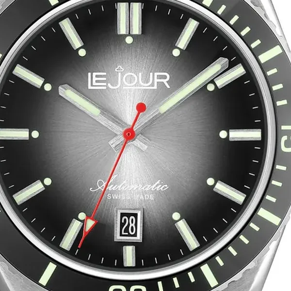
Delmare Diver 41Black
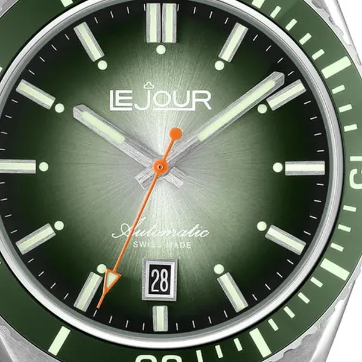
Delmare Diver 41Green
 Delmare Diver 41
Delmare Diver 41Blue
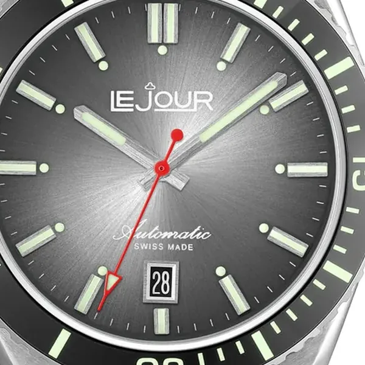
Delmare Diver 41Grey
 Delmare Diver 41
Delmare Diver 41Brown
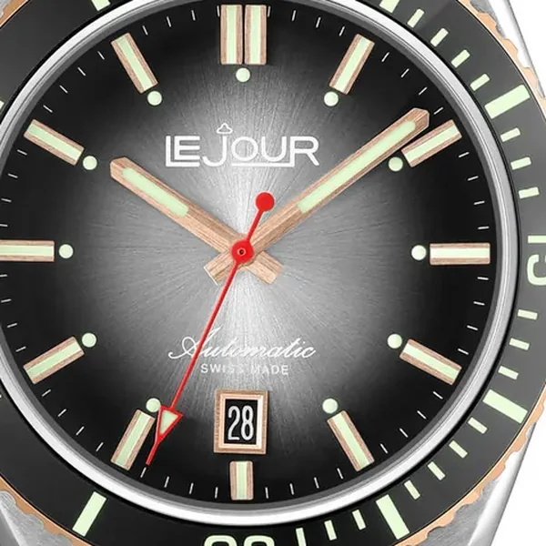
Delmare Diver 41Black Rosé
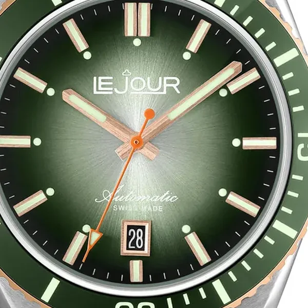
Delmare Diver 41Green Rosé
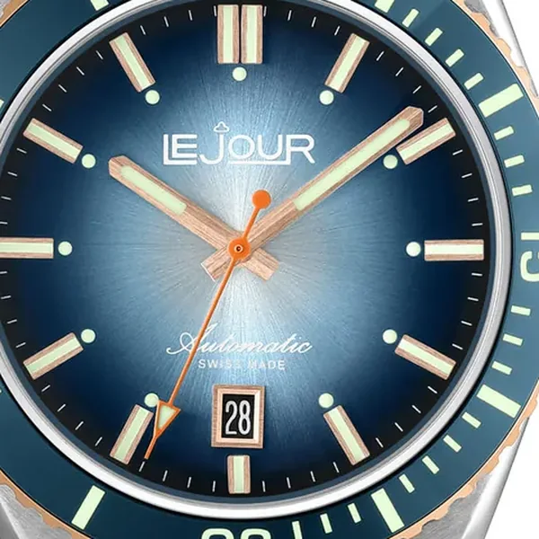
Delmare Diver 41Blue Rosé
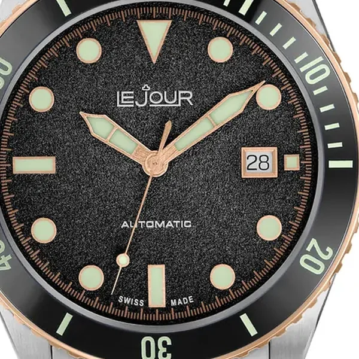
Seacolt Diver 42BlackSeacolt Diver 42
Blue
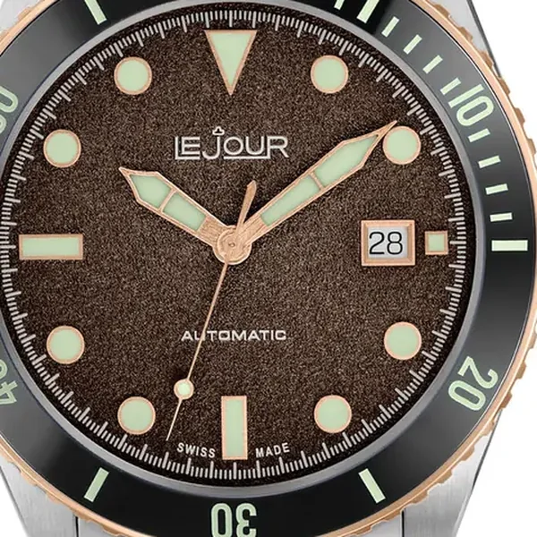
Seacolt Diver 42Brown
 Seacolt Diver 42
Seacolt Diver 42Green
 Coral Diver 42
Coral Diver 42Black
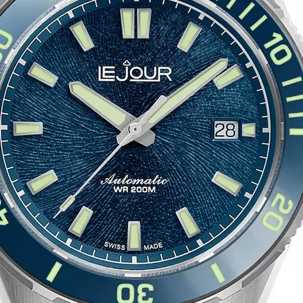
Coral Diver 42Blue
 Coral Diver 42
Coral Diver 42Green
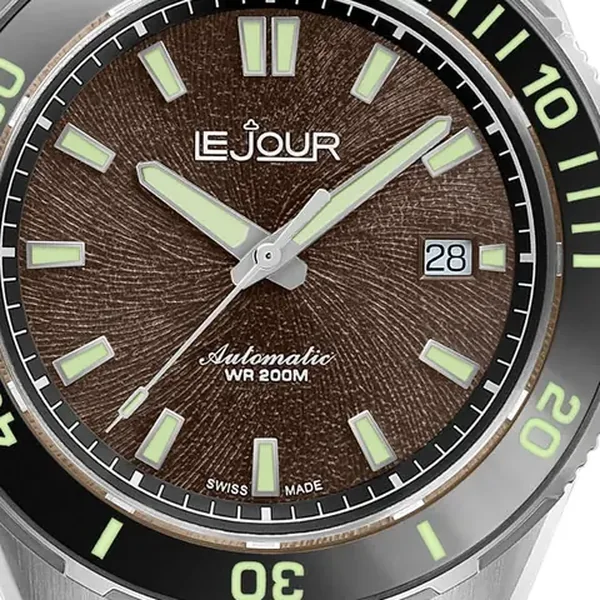
Coral Diver 42Brown
 Hammerhead GMT 42
Hammerhead GMT 42Black
 Hammerhead GMT 42
Hammerhead GMT 42Blue
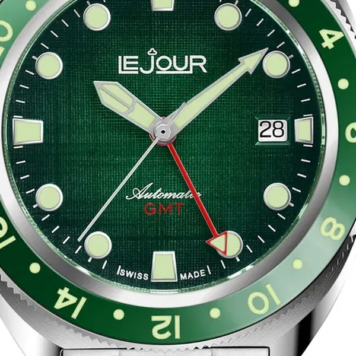
Hammerhead GMT 42Green
 Hammerhead GMT 42
Hammerhead GMT 42Black and BlueHammerhead Bronze 39
Blue
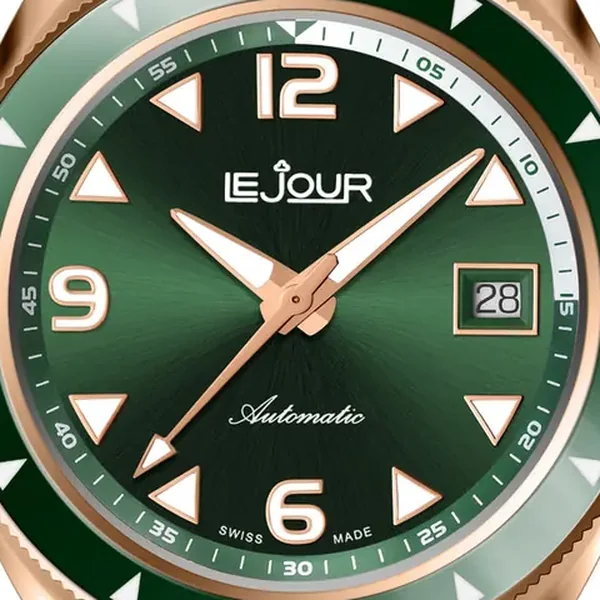
Hammerhead Bronze 39Green
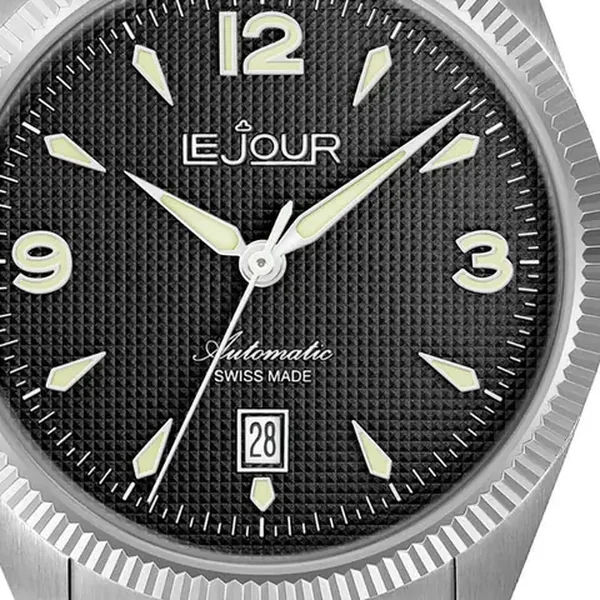
Brooklyn 40Black
 Brooklyn 40
Brooklyn 40Blue
 Brooklyn 40
Brooklyn 40Green
 Brooklyn 40
Brooklyn 40ChampagneBrooklyn 40
Light Blue
 Brooklyn 40
Brooklyn 40Black Two-Tone
 Fardón 38
Fardón 38OnyxFardón 38
Malachite
 Heritage 42
Heritage 42BlackHeritage 42
Blue
 Heritage 42
Heritage 42Green
 Flieger Bronze 45
Flieger Bronze 45Black
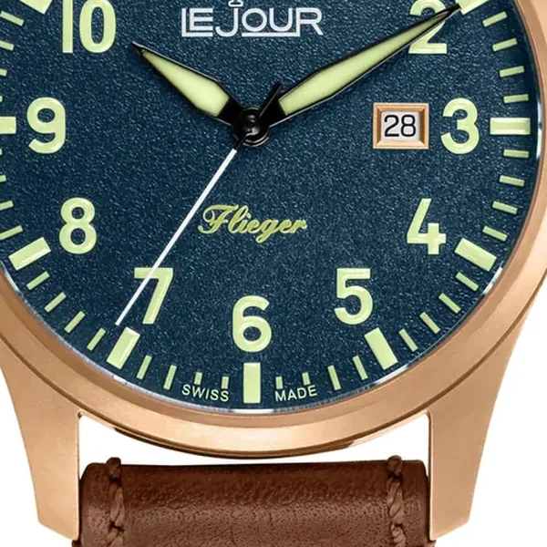
Flieger Bronze 45Blue
June 1980
One watch, two names.
A dealer catalogue from June 1980 lists the Le Jour 7203 beside the Heuer Pasadena and calls them the exact same watch. Le Jour at USD 300, Heuer at USD 354. Heuer built chronographs under the Le Jour name. That page is where our story begins.
Read the story of June 1980The letter from Le Jour
Every two weeks: new watches and stories from the archive. 10% on your first order when you join.
Duties and VAT included
Paid at checkout. What you see is what you pay.
Tracked by FedEx
From our hands to your door, followed all the way.
Sellita inside
Movements every good watchmaker knows.
10% on your first order
When you join the letter from Le Jour.